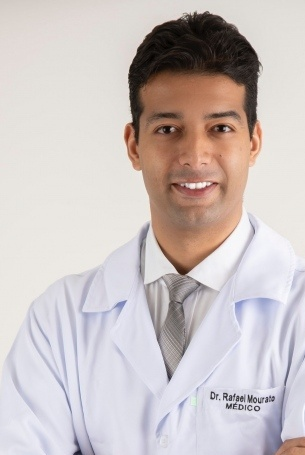

Urologista em João Pessoa
Dr. Rafael
Mourato
Urologia em João Pessoa. Uma avaliação individual para compreender sintomas, exames e possibilidades de cuidado.
Cuidado urológico
Urologia com contexto para cada decisão.
Próstata
Sintomas, exames e impacto na rotina: informações que precisam ser consideradas juntas.
Conhecer o tema →Cálculos urinários
A localização do cálculo e a avaliação clínica ajudam a definir o próximo passo.
Conhecer o tema →Uro-oncologia
Investigação e planejamento individual, sem antecipar um diagnóstico pelo site.
Conhecer o tema →Cirurgia urológica
Necessidade, alternativas e acompanhamento vêm antes da escolha da técnica.
Conhecer o tema →Sua dúvida tem espaço
O que trouxe você até aqui?
Mudanças para urinar
Jato diferente, maior frequência ou dificuldade de esvaziamento merecem avaliação, sem presumir a causa.
Um resultado de exame
Um laudo é parte da história. Leve resultados anteriores e suas dúvidas para a consulta.
Uma decisão pela frente
Entender por que investigar, acompanhar ou tratar faz parte de uma conversa individual.
A consulta
Um encontro para entender o seu caso.
- 1
Conte sua história
O que mudou, desde quando e como isso interfere no dia a dia? Não é preciso chegar com diagnóstico pronto.
- 2
Reúna informações
Exames anteriores e tratamentos já realizados ajudam a dar contexto à avaliação.
- 3
Converse sobre possibilidades
Entenda objetivos, alternativas e limites de cada próximo passo.
- 4
Combine a continuidade
A necessidade de exames, retorno e acompanhamento é definida conforme o caso.
Quem conduz o cuidado
Formação e presença na conversa.

CRM-PB 8795 · RQE 5420
Dr. Rafael Mourato
Medicina na UFPR, Cirurgia Geral na UFPB e Urologia na UPE. Uma trajetória ligada à avaliação clínica e a diferentes campos do cuidado urológico.
Conheça o médicoFormação
Um percurso de formação em medicina.
- UFPR
Medicina
Universidade Federal do Paraná.
- UFPB
Cirurgia Geral
Universidade Federal da Paraíba.
- UPE
Urologia
Universidade de Pernambuco.
Próstata
O tamanho não conta a história inteira.
Sintomas
O que mudou ao urinar e quanto isso interfere na rotina?
Avaliação
Resultados e história precisam ser compreendidos em conjunto.
Decisão
A indicação de acompanhar, investigar ou tratar é individual.
Temas e experiências
Informação para preparar perguntas.
Crescimento prostático · 2020
Publicação histórica de 27/03/2020 sobre crescimento da próstata e decisão de cirurgia. Um tema para conversar, não uma orientação individual atual.
Conhecer o tema →Trabalho em equipe · 2026
Participação na equipe presencial em João Pessoa em 24/04/2026. O cirurgião remoto principal foi André Berger; a experiência não é anunciada como serviço de telecirurgia no consultório.
Conhecer o tema →Perto de você
Atendimento em João Pessoa.
JOÃO PESSOA · PB
Tambauzinho
Atendimento com confirmação manualOnde atendo
Instituto Vizage · R. Vandick Pinto Filgueiras, 283 · Tambauzinho · João Pessoa — PB · 58042-110
Confirme os detalhes de atendimento antes de sair de casa.
Perguntas frequentes
Antes de agendar
O pedido já confirma uma consulta?
Não. Dia e hora são preferências, sem reserva de vaga. A recepção confirma manualmente a disponibilidade e combina os detalhes.
Preciso fazer exames antes da primeira consulta?
Leve exames anteriores que já tiver. A necessidade de novos exames depende da avaliação individual; o site não solicita exames.
Uma próstata maior exige cirurgia?
O tamanho isolado não define a indicação. Sintomas, achados clínicos e impacto na rotina precisam ser considerados em conjunto.
Posso enviar sintomas no formulário?
Não. O formulário prepara apenas dia e hora de preferência. Não inclua sintomas, exames ou outros dados de saúde.
E se eu precisar de atendimento imediato?
Febre com dor urinária ou lombar, incapacidade de urinar, sangramento importante ou piora acentuada exigem avaliação presencial sem esperar o formulário.
Seu próximo passo
Uma consulta.
Uma conversa com contexto.
Instituto Vizage · R. Vandick Pinto Filgueiras, 283 · Tambauzinho · João Pessoa — PB · 58042-110
Ver rota no mapaCanal de agendamento
+55 (83) 99309-5353
Confirme dia, horário e condições do atendimento com a recepção antes de se deslocar.